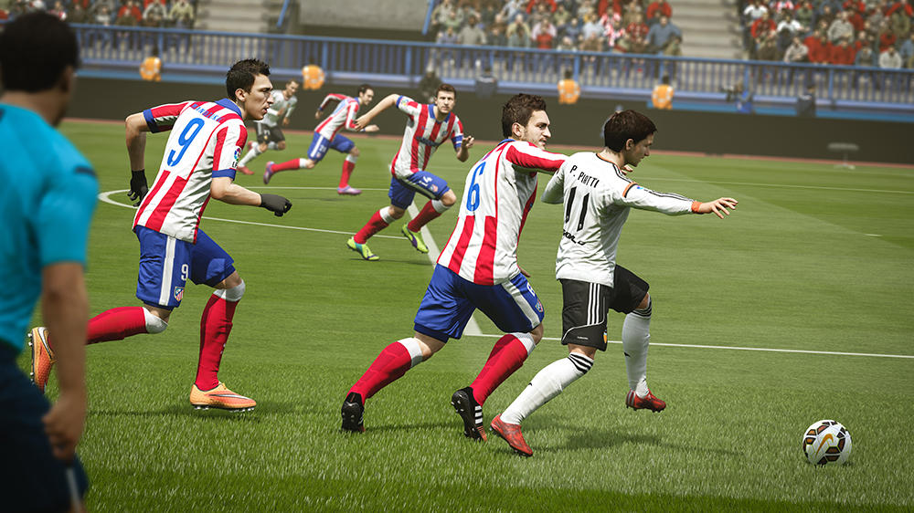

FIFA 16
Review of FIFA 16
Defending is easier. Or at least, defenders are now better equipped to win the ball and compete against attacking players. Slide tackles have regained some of the old potency; players really do slide again, meaning it possible to win the ball from unexpected distance. Well-timed toe-pokes, meanwhile, can satisfyingly break up play, while desperate moments give players more options to deliberately foul players just before they break into space (this is usually harshly punished, but so much fun). I’ve been caught by defenders when I thought I was out of range, I’ve won the ball with crunching block-tackles at fullback, and I’ve used the slide to channel runners by blocking off their path. This new, stronger, more flexible slide tackling is a success.Other noticeable additions to defending include a tackle feint, for counter-baiting tricksy opponents during one-on-one battles. No longer does the protect-the-ball crab pose offer an impenetrable defence; it easier to slip around players in possession of the ball and then get a foot to it. Perhaps most significantly of all, defender AI has been fine-tuned to make more interceptions and to track runners with more doggedness.These last points are the ones that really contribute to FIFA 16 most obvious shift; the fact that the midfield is now a battlefield. Working the ball through the middle of the park feels attritional and muddy, full of physicality and friction. More than ever, it’s a game of inches and interceptions, with defenders urging themselves towards the ball wherever possible, pressing and lunging and reaching out feet. It can get scrappy, with miscontrols and turnovers spilling messily around for a few seconds at a time, but it feels like an organic sort of mess, a footballing mess.
In response to all this there are offensive tools to make the midfield an even fight, if an asymmetrical one. No-touch dribbling adds another layer to the game’s skill system, enabling players to duck and feint over the ball, looking to send defenders the wrong way. This is pretty but so far, for me, not hugely effective; I rarely had enough space in-field to dance over the ball, and on the wings I went for reliable old step-overs. But more integral is the new precision passing system, which effectively introduces a hard, pinged pass that can be pulled off by holding R1 . It clearly been designed as a foil to the stickier, interception-prone midfield, and it comes with an element of risk and skill. Lesser players are more likely to fumble these stinging passes, and judging angles, ability and distance adds a new dimension to the basics of FIFA play.
The result of all of this is that FIFA 16 is full of scrappy back and forth, the ability to play patient possession football, and a greater range of passing than ever. The dominance of pace in last year's game is over, although sometimes it does seem as though it has been offed through foul means, with through-balls, for instance, feeling conspicuously limited, unwilling to put players in the clear either up the lines or over the top of defences. But for the most part the new style of play--slower, grittier, but still skilled--seems like it’s been achieved through nurturing rather than nerfing and so that is everything, in terms of its gameplay pillars, which no doubt is the area on which I place the most importance when judging FIFA. But FIFA’s success during the last few years has been as much to do with the collecting and trading compulsions of Ultimate Team as it’s been about actual (pretend) football. So the arrival of Draft mode, a significant addition to Ultimate Team, is also worth a good look.Putting aside the longstanding misgivings about how Ultimate Team commodifies the magic of football, and how it sort of encourages kids to gamble, it’s great. Draft takes the pleasure of building a team--piecing together strong chemistry, the thrill of opening packs--and gives it to you without the need to pull your main team apart. It costs 15,000 coins (or 300 microtransaction FIFA points) to enter, and of course Draft mode is, in the end, about making more money. But that’s OK if it’s something worth paying for, and Draft offers something more substantial than the chance to simply reveal a randomised selection of players. Building a new team is a complex puzzle that’s different with each Draft, and winning a few games delivers substantial rewards (my first four-game winning streak gave me a total return of around 60,000 coins, which is a fine start to the season).

{kind=link}
{kind=link}